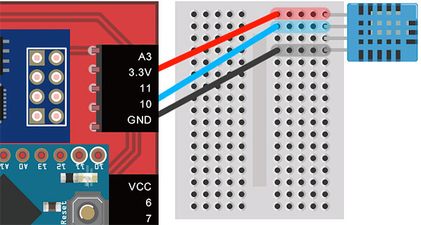
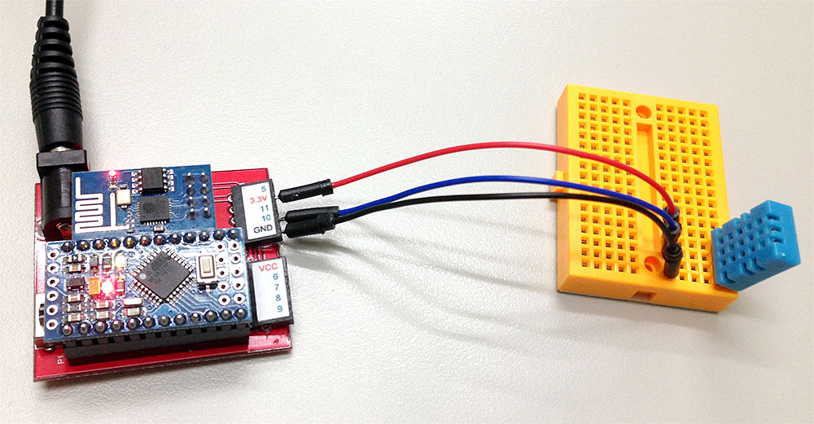
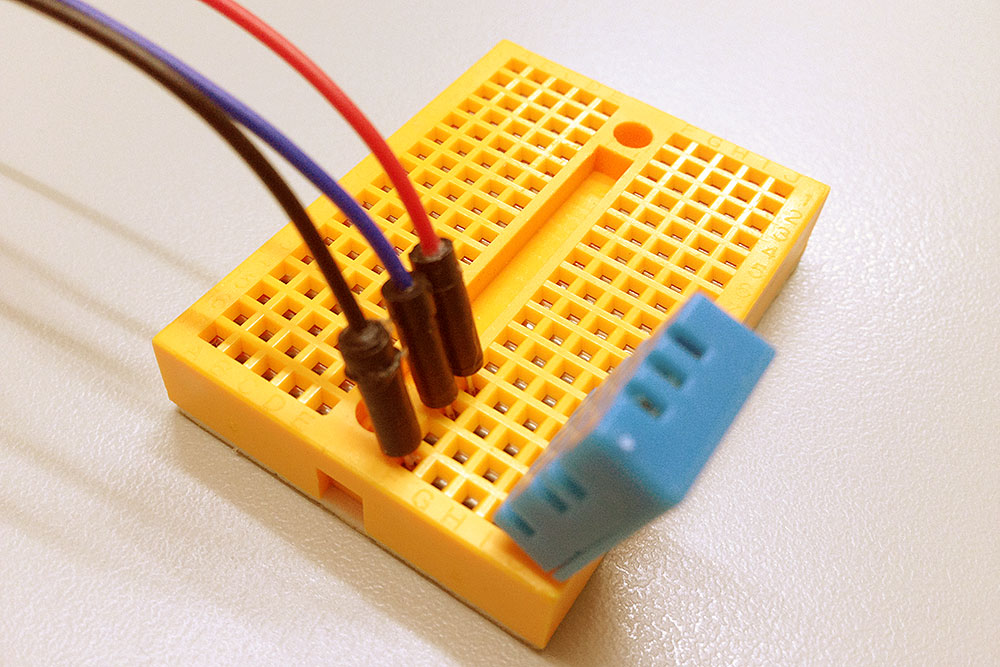
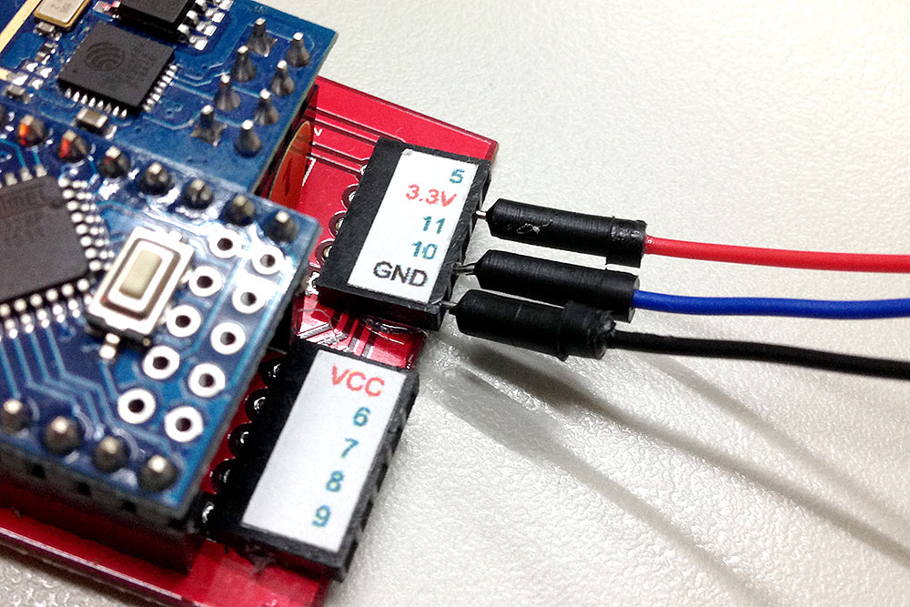
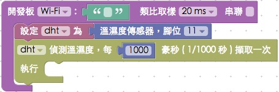
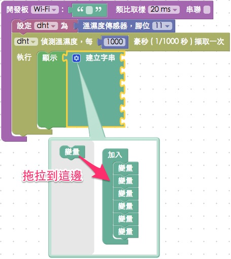

教學範例 10：溫濕度傳感器
溫濕度傳感器是接收外界環境變數最基本的傳感器，透過溫濕度傳感器，可以準確的偵測溫度與溼度的即時變化，若再搭配一些樣式表 ( CSS )、圖表工具 ( D3.js、Google Chart ) 或後端資料庫，就可以整合成為非常有用的數據收集應用。
範例影片展示
影片對應範例：https://blockly.webduino.io/?page=tutorials/dht-1
接線與實作
溫濕度傳感器有四隻針腳，第一隻針腳為 v ( 接 3.3V )，第二隻為 data ( 接 10 )，第三隻沒有作用，為 N/C，第四隻為 GND。

可以直接將溫濕度傳感器接在馬克 1 號上，或利用麵包板接線出來。

實際接線照片：

Webduino Blockly 操作解析
打開 Webduino Blockly 編輯工具 ( https://blockly.webduino.io )，因為這個範例會用網頁「顯示文字」來顯示溫度或濕度，所以要先點選右上方「網頁互動測試」的按鈕，打開內嵌測試的網頁，用下拉選單選擇「顯示文字」。

把開發板放到編輯畫面裡，填入對應的 Webduino 開發板名稱，開發板內放入溫濕度積木，名稱設定為 dht，腳位設定為 11，接著放入每多久偵測一次溫濕度的積木，時間設定為 1000 毫秒 ( 1 秒 )。

因為顯示文字只有一個，要同時顯示溫濕度的話就要使用「建立字串」的積木，建立字串積木預設只有一個缺口，我們可以點選藍色小齒輪，增加缺口的數量。

口了缺口後，在缺口內填入對應的文字以及偵測到的溫濕度。

如果顯示出來的文字太大，或者行高太窄，我們也可以利用文字樣式的積木來調整，這裏將文字和行高都設為 20。

完成後，確認開發板上線 ( 點選「檢查連線狀態」查詢 )，點選紅色的執行按鈕，就可以看到當下的溫濕度，如果用吹風機或嘴呼氣，就會看到溫濕度的變化了。 ( 解答：https://blockly.webduino.io/#-K79kCuHvGneUStvVcye )

程式碼解析 ( 完整程式碼、檢查連線狀態 )
HTML 的 header 引入 webduino-all.min.js，目的在讓瀏覽器可以支援 WebComponents 以及 Webduino 所有的元件，如果是用 Blockly 編輯工具產生的程式碼，則要額外引入 webduino-blockly.js。
<script src="https://webduino.io/components/webduino-js/dist/webduino-all.min.js"></script>
<script src="https://webduinoio.github.io/webduino-blockly/webduino-blockly.js"></script>
HTML 裡頭有一個 span，負責顯示文字。
<span id="demo-area-01-show">123</span>
JavaScript 用了一個 read 的方法來讀取溫濕度，read 的第一個參數是做動作的函式，第二個參數是時間，可以看到這裡時間設定為 1000 ( 毫秒 )，然後顯示文字使用了 innerHTML 來呈現，字體大小與行高則是用 style 來修改。
var dht;
boardReady('', function (board) {
board.samplingInterval = 20;
dht = getDht(board, 11);
document.getElementById("demo-area-01-show").style.fontSize = 20+"px";
document.getElementById("demo-area-01-show").style.lineHeight = 20+"px";
dht.read(function(evt){
document.getElementById("demo-area-01-show").innerHTML = (['溫度：',dht.temperature,'度，','濕度：',dht.humidity,'%'].join(''));
}, 1000);
});
以上就是利用溫濕度傳感器，來偵測環境溫濕度的教學範例。
完整程式碼：http://bin.webduino.io/coca/edit?html,css,js,output
解答：https://blockly.webduino.io/#-K79kCuHvGneUStvVcye
溫濕度傳感器的延伸教學：
Webduino Blockly 課程 5-2：繪製溫濕度圖表
Webduino Blockly 課程 5-3：使用 Firebase 紀錄溫濕度數值
如果您還想了解更多，可以參考：
2. Blockly 教學：https://goo.gl/Y8sRkl
3. 產品總覽：https://webduino.io/buy.html
4. 露天賣場：http://goo.gl/0Dj9ip